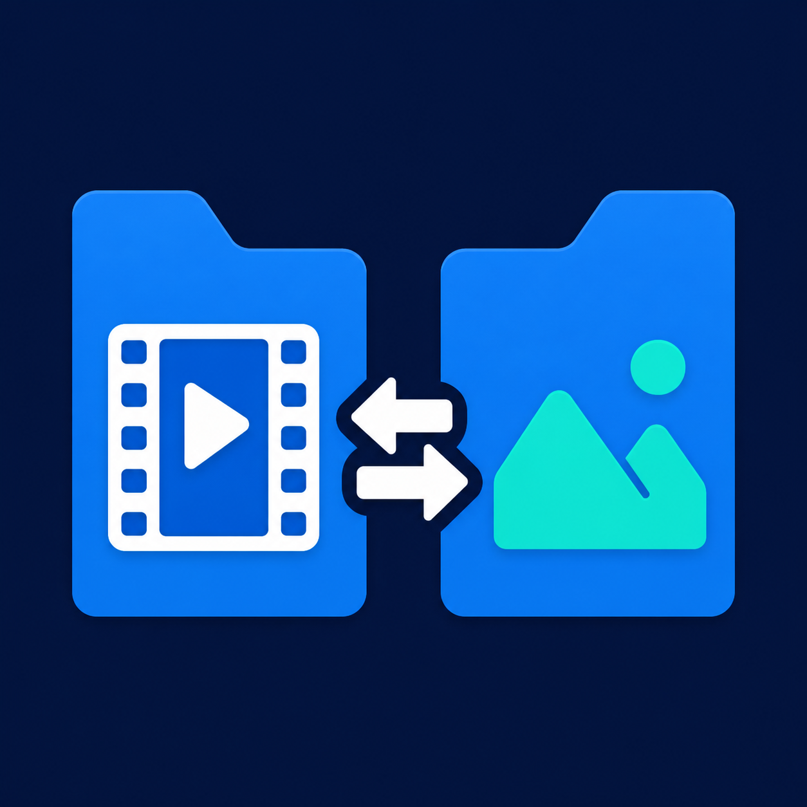

Review videos quickly
Scan thousands of files, use cached thumbnails and metadata, and preview videos independently on either side without opening every clip in another program.

Rapidly scan, preview and manipulate large video and image collections across entire folder trees—then select files by codec, resolution, size, duration and much more.
Scan thousands of files, use cached thumbnails and metadata, and preview videos independently on either side without opening every clip in another program.
Turn on Include subfolders to treat a complete folder tree as one collection. Filter, sort and select media wherever it is stored below the chosen folder.
Find and manipulate groups by codec, resolution, file size, duration, bitrate, frame rate, date, type, rating, label, tags and other technical properties.
Convert selected videos to H.264, H.265/HEVC or AV1, change resolution, create proxies or remux streams. Supported NVIDIA, Intel and AMD hardware acceleration can reduce conversion time.
Copy, move and batch-rename selected groups with previews, queues and undo support. Compare folders, find duplicates, verify media integrity and export inventory reports.
No account, subscription, advertising or analytics. Media analysis and conversion stay on the computer. Version 12.2.2 is free software under GPL-3.0-or-later.